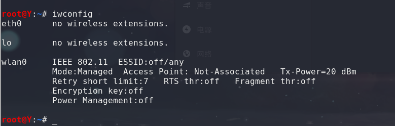
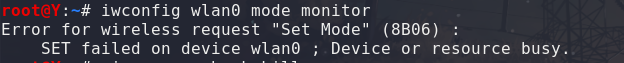
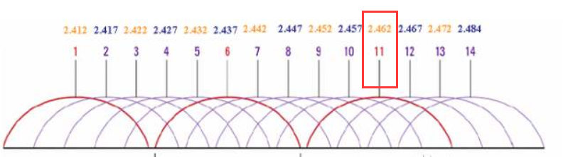
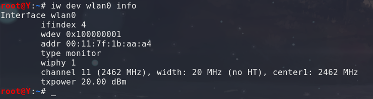
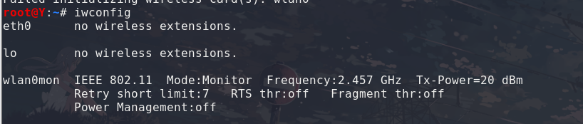
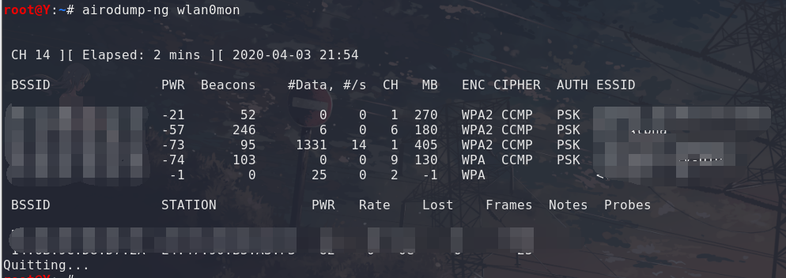

来自之前cnblog的博客
源地址：https://www.cnblogs.com/This-is-Y/p/12629315.html
某宝上花了我138块大洋买的
（值得注意的是，要买v1版本，v2不支持kali）
信道：又被称为通道或频道，是信号在通信系统中传输的通道，由信号从发射端传输到接收端所经过的传输媒质所构成。而无线信道就是以辐射无线电波为传输方式的无线电信道，简单来说就是无线数据传输的通道。
扫描模式：
被动扫描：在每个信道上切换以监听AP（无线接入点）周期性发送的Beacon帧，通过解析Beacon帧可以得到该接入点的SSID（热点名称），BSSID（MAC地址），支持的频率等。默认情况下，接入点每100ms发生一次Beacon帧。如果客户端没有在信道上等待足够长的世界，可能会错过AP的Beacon帧。所以这时候就要有主动扫描了
主动扫描：在主动扫描中，客户端依然在每个信道中切换，但同时发送Probe Request帧询问该信道上的可用网络，Probe Request帧被发送到广播地址（ff:ff:ff:ff:ff:ff:ff）,一旦发送后就会启动一个计时器并等待响应，计时器结束时处理所有收到的应答。如果没有收到响应，客户端会切换到下一个信道重复发现过程。发送的Probe Requset帧可以指定特定的SSID，称为Directed Probe Requset（定向探测请求），只有具有该SSID的接入点会应答；也可以将SSID的值设为空，称为Broadcast Probe Request（广播探测请求）。收到该请求的所有热点都将进行响应
监听模式：在监听模式中，内核会直接将802.11帧传递给上层。而不会进行筛选，然后再将802.11帧封装成普通的网络帧传递给上层（非监听模式）。使用在监听模式中，用户可以通过接口直接获得802.11原始数据包。需要注意的是，Linux操作系统下的NetworkManger等网络配置服务可能会改变网卡的工作模式和对信道造成干扰，最好先停止此类服务：airmon-ng check kill
因为我用的kali虚拟机，建议先等kali开机后，再插入网卡进行识别
用iwconfig查看网卡状态或修改模式：

将wlan0无线网卡切换至监听模式，设置信道为11：
ifconfig wlan0 down
iwconfig wlan0 mode monitor
ifconfig wlan0 up
iwconfig wlan0 channel 11
出现
一般是没有运行ifconfig wlan0 down
要是出现iwconfig: unknown command “down”，擦一下眼睛，检查是不是把ifconfig写成了iwconfig
设置完后，再iwconfig看看

可以看到模式以及变成了monitor（监听）
Frequency（频率）是2.462GHz，对比可以知道就是11信道

除了iwconfig，也可以用iw dev wlan0 info来查看网卡属性

设置监听模式以及信道
iw dev wlan0 interface add mon0 type monitor（新增mon0虚拟接口并指定为监听模式。删除该接口：iw dev mon0 del）
ifconfig up
iw dev mon0 set channel 11
除了上面两个，当然还少不了我们的Aircrack-ng了
用它下面的airmon-ng组件新增一个监听端口
airmon-ng start wlan0
用iwconfig查看（这是接口名为wlan0mon）

扫描
airodump-ng：
airodump-ng wlan0mon
可以看到出现的热点信息

参数值分别为BSSID（MAC地址），PWR（信号强度），Beacon（信标帧数量），Data（数据分组数量），CH（信道），ENC（加密算法），CIPHER（认证协议），ESSID（热点名称）
下部分为捕获到的无线客户端信息，包裹BSSID，STATION（已连接热点MAC地址），PWR，ProbeRequest帧中的热点名称
然后还可以用Kismet，Wireshark来扫描，这里就不写了（真不是是我懒）
发现隐藏网络：
使用aireplay-ng –deauth 10 -a <BSSID> mon0（后面再细说）
关于绕过MAC地址认证
MAC地址认证：通过在路由器设置，从而只允许列表内的客户端连接该网络。然而可以通过修改本机无线网卡的MAC地址来达到绕过。
第一步，使用airodump-ng扫描周边无线网络，可以在下面获取到已连接到热点的正常客户端MAC地址，复制一个保存下来，
第二部，修改本机MAC地址，ifconfig wlan0 down（先停止服务）。ifconfig wlan0 hw ether xx:xx:xx:xx:xx:xx（刚才保存的正常客户端MAC地址）。ifconfig wlan0 up （开始工作）。嫌麻烦可以直接用macchanger -m xx:xx:xx:xx:xx:xx wlan0
值得注意的是，最好等该客户端下线后再尝试绕过连接。否则网络会因为多个客户端有相同的NAC地址而发生网络异常。
修改MAC地址除了可以用来绕过路由器访问限制之外，还可以对某些公共热点对免费使用时间的限制，因为有些免费热点是通过MAC地址来判断客户端新旧的。使用macchanger -r wlan0可以随机设置一个MAC地址（然而在5G即将到来的时候，这种行为显然不是很有必要）